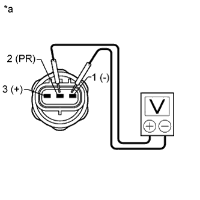

AIR CONDITIONING PRESSURE SENSOR > ON-VEHICLE INSPECTION |
| 1. INSPECT AIR CONDITIONING PRESSURE SENSOR |
Install a manifold gauge set.
Disconnect the connector from the air conditioning pressure sensor.
|  |
Connect the positive (+) lead of a DC 5 V power source to terminal 3 and the negative (-) lead to terminal 1.
Connect the positive (+) lead of the voltmeter to terminal 2 and the negative (-) lead to terminal 1.
Measure the voltage according to the value(s) in the table below.
| Tester Connection | Condition | Specified Condition |
| 2 (PR) - 1 (-) | Refrigerant pressure: 0.39 to 3.187 MPa (57 to 463 psi) | 0.92 to 4.9 V |
| *a | Component without harness connected (Air Conditioning Pressure Sensor) |